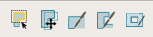

You can create
a new pattern matching database (PMDB) from the Calibre Pattern
Matching GUI.
Procedure
- Invoke the GUI from the command
line:
- Choose or click the New
Library button (
 ) in
the toolbar.
) in
the toolbar. The New Library Wizard opens.
- Fill in the required information:
- Define
Library Path step — Enter the library name.
- Set
Pattern Layers step — Add layer definitions manually or click the Load
Map File button to populate the layers with a layer
map file. See “Loading a Layer Mapping File for a Pattern Library” for information.
CAUTION: If pattern
libraries might be merged at a later time, it is important to use
a consistent set of layers in your libraries. When merging libraries,
the tool only uses the layer definitions from the first input library.
It is important that layer names, order, and number of layers are
identical for all the input libraries. See “Merging Pattern Libraries Using the GUI”.
- Create
Empty Pattern step — Leave the “Create pattern” checkbox checked.
The following steps assume a pattern is selected in the pattern
list.
- Click Finish to
close the wizard.
The library is created with an empty pattern.
- (Optional)
Select to specify
grid options and canvas background color.
- Add pattern
geometries using the drawing action buttons above the pattern canvas.

Add at least one pattern shape. A library must have at least
one non-empty pattern in order to save the library. See “Creating a New Pattern” for more
details about creating a pattern.
- (Optional) Add marker, extent,
and region layers using the toolbar buttons on the Layers tab.
- (Optional)
Click the Attributes tab and add attributes,
properties, keys, comments, and orientations.
- (Optional)
Specify jog tolerance for the library. See “Specifying Jog Tolerance for Patterns in a Library”.
- Click the Save
Library button (
 ) or
choose to
save the library.
) or
choose to
save the library. Errors are reported in the Transcript pane.
Results
A new pattern library.
 (Add
Marker Layer)
(Add
Marker Layer)  (Add
Layer Extent)
(Add
Layer Extent)  (Add
Region Layer)
(Add
Region Layer)